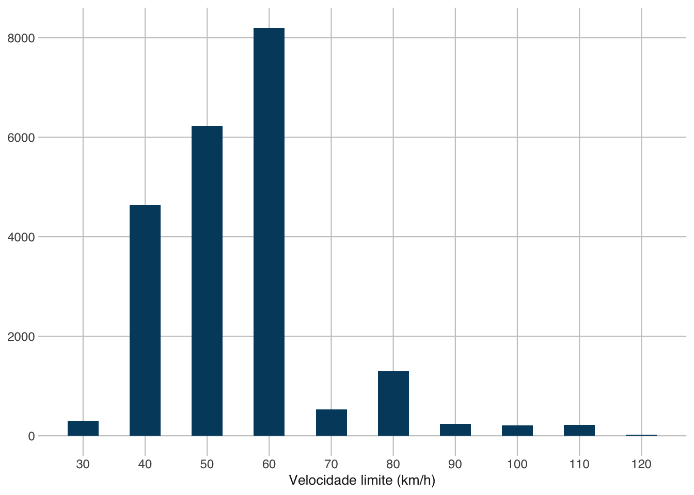
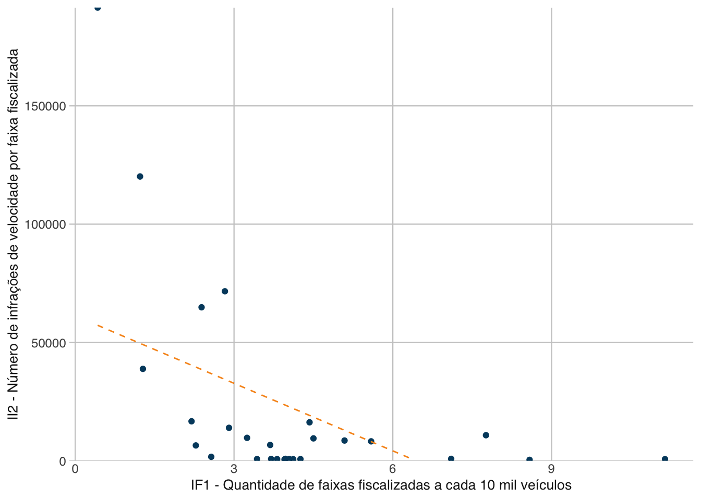

5 Resultados
Foram identificadas 26.122 câmeras de segurança no Brasil no ano de 2024. Desde total, 98,67% correspondem a câmeras fixas de segurança (25.774 câmeras). Do total de câmeras fixas de segurança no Brasil, 58,79% estão localizadas em vias urbanas (15.153 câmeras de segurança) e 41,21% em rodovias (10.621 câmeras de segurança). Na comparação com o estudo anterior baseado nos dados de 2023 (ONSV e UFPR 2025), percebe-se que houve um aumento da proporção de câmeras fixas de segurança nas vias urbanas, tendo em vista que no ano de 2023 representavam 50,50% dos equipamentos.
O gráfico da Figura 5.1 demonstra a quantidade absoluta de câmeras fixas de segurança para cada limite de velocidade estabelecido.
A Tabela 5.1 contém os valores dos sete indicadores de fiscalização eletrônica de velocidade (\(IF_1\) ao \(IF_7\)) para o Brasil e para as 27 Unidades da Federação. Os valores estão ordenados em ordem decresecente conforme o \(IF_1\), que manifesta o nível geral de fiscalização eletrônica de velocidade a partir de câmeras fixas de segurança.
| UF | \(IF_1\) | \(IF_2\) | \(IF_3\) | \(IF_4\) | \(IF_5\) | \(IF_6\) | \(IF_7\) |
|---|---|---|---|---|---|---|---|
| DF | 11,14 | 5,65 | 6,81 | 4,33 | 1,00 | 22,05 | 113,19 |
| CE | 8,57 | 3,71 | 3,54 | 5,03 | 1,00 | 3,80 | 83,19 |
| TO | 7,70 | 3,48 | 4,05 | 3,65 | 0,99 | 3,92 | 48,18 |
| GO | 7,09 | 4,12 | 2,97 | 4,12 | 0,99 | 10,26 | 54,07 |
| MS | 5,57 | 2,74 | 3,00 | 2,58 | 1,00 | 6,77 | 41,41 |
| PI | 4,98 | 2,60 | 1,07 | 3,92 | 0,98 | 0,91 | 8,08 |
| PB | 4,47 | 2,42 | 3,03 | 1,44 | 0,99 | 12,34 | 39,04 |
| SE | 4,35 | 2,07 | 1,02 | 3,32 | 0,98 | 28,64 | 1,34 |
| SP | 4,23 | 2,07 | 3,43 | 0,80 | 0,99 | 3,87 | 1.382,28 |
| BR | 4,16 | 2,11 | 2,55 | 1,61 | 0,99 | 6,54 | 39,44 |
| PA | 4,07 | 1,99 | 1,87 | 2,20 | 0,98 | 1,92 | 25,77 |
| SC | 4,00 | 2,13 | 2,84 | 1,16 | 0,99 | 16,49 | 38,81 |
| BA | 3,93 | 1,77 | 1,79 | 2,14 | 0,99 | 7,18 | 33,16 |
| PR | 3,93 | 1,85 | 3,16 | 0,77 | 0,99 | 8,62 | 96,15 |
| MG | 3,80 | 1,87 | 1,90 | 1,90 | 0,99 | 6,67 | 124,29 |
| MT | 3,68 | 1,81 | 2,14 | 1,54 | 0,98 | 4,63 | 7,09 |
| RN | 3,66 | 1,52 | 0,87 | 2,80 | 0,99 | 21,20 | 38,20 |
| RJ | 3,43 | 1,96 | 2,24 | 1,19 | 1,00 | 16,10 | 44,40 |
| ES | 3,21 | 1,86 | 0,48 | 2,73 | 0,96 | 19,41 | 32,72 |
| AL | 2,89 | 1,28 | 0,00 | 2,89 | 0,98 | 30,08 | 27,45 |
| AP | 2,75 | 1,20 | 2,29 | 0,46 | 0,97 | 0,94 | 3,41 |
| RS | 2,50 | 1,73 | 1,49 | 1,00 | 0,97 | 5,16 | 144,62 |
| RR | 2,32 | 1,18 | 1,83 | 0,48 | 0,97 | 0,70 | 0,90 |
| PE | 2,27 | 1,22 | 1,21 | 1,05 | 0,99 | 6,62 | 47,76 |
| MA | 2,18 | 0,97 | 1,32 | 0,86 | 0,99 | 2,79 | 14,71 |
| RO | 1,25 | 0,62 | 0,47 | 0,79 | 0,98 | 4,12 | 32,83 |
| AC | 1,22 | 0,44 | 1,01 | 0,22 | 1,00 | 0,24 | 8,34 |
| AM | 0,37 | 0,24 | 0,15 | 0,22 | 0,83 | 0,40 | 11,03 |
Fonte: Os autores (2026)
Em relação ao \(IF_1\) (número de faixas fiscalizadas por câmeras fixas de segurança por grupo de 10 mil veículos), o valor nacional resultou em 4,16. Distrito Federal (11,13), Ceará (8,57), Tocantins (7,70) e Goiás (7,09) se destacaram com os maiores valores. Por outro lado, os estados do Amazonas (0,37), Acre (1,22) e Rondônia apresentaram os valores mais baixos.
Os resultados ao considerar o \(IF_2\) (número de câmeras fixas de segurança por grupo de 10 mil veículos) foram similares, com Distrito Federal (5,65), Goiás (4,12), Ceará (3,71) e Tocantins (3,48) apresentaram os maiores valores e Amazonas (0,24), Acre (0,44) e Rondônia (0,62) apresentaram os menores valores. O valor nacional para este indicador resultou em 2,11.
Em relação ao \(IF_3\) (número de faixas fiscalizadas por câmeras fixas de segurança em vias urbanas por grupo de 10 mil veículos), o valor nacional resultou em 2,55. Distrito Federal (6,81) e Tocantins (4,05) resultaram com os maiores valores. Por outro lado, os estados de Alagoas (0,00) e Amazonas (0,15) resultaram com os menores valores referentes às vias urbanas.
Para o \(IF_4\) (número de faixas fiscalizadas por câmeras fixas de segurança em rodovias por grupo de 10 mil veículos), o Ceará (5,03), o Distrito Federal (4,33) e Goiás (4,12) apresentaram os indicadores mais elevados. Na base, com os menores indicadores figuram Amazonas e Acre, ambos com IF4 igual 0,22.
O \(IF_5\) (percentual de faixas fiscalizadas por câmeras fixas de segurança aprovadas e reparadas sobre o total de faixas monitoradas câmeras de segurança) mostrou menor dispersão entre as Unidades da Federação, com valores máximos de 1,00 observados no Distrito Federal, Ceará, Rio de Janeiro, Mato Grosso do Sul, Rio Grande do Norte e Acre. Em contrapartida, Amazonas apresentou o indicador mais baixo (0,83).
No tocante ao \(IF_6\) (número de faixas fiscalizadas por câmeras fixas de segurança a cada 100 quilômetros de rodovia federal), o ranking muda de perfil: Alagoas (30,08), Sergipe (28,64) e Distrito Federal (22,05) assumem as primeiras posições. O menor valor foi registrado nos estados do Acre (0,24) e Amazonas (0,40).
O \(IF_7\) (número de faixas fiscalizadas por câmeras fixas de segurança a cada bilhão de quilômetros rodados) apresentou maiores contrastes entre as Unidades da Federação. São Paulo (1.382,88) apresentou o maior valor, seguido do Rio Grande do Sul (144,62) e Minas Gerais (124,29). Nas últimas posições encontram-se na outra ponta, os menores valores foram identificados em Roraima (0,90) e Sergipe.
Nos gráficos da @ podem ser consultadas as séries temporais no período 2023 a 2026 para os indicadores de fiscalização eletrônica de velocidade \(IF_1\), \(IF_2\), \(IF_6\) e \(IF_7\).
Entre 2024 e 2025 houve um aumento do nível de fiscalização eletrônica no Brasil utilizando-se como referência o \(IF_1\), que aumentou de 4,16 para 4,35 faixas fiscalizadas por câmeras fixas de segurança por grupo de 10 mil veículo – um aumento de 4,57%. Os valores para os anos de 2023 e 2026 podem ter sido influenciados pelo menor período de verificações disponível. Ao adotar como referência o \(IF_2\), a evolução da série histórica é semelhante.
Na Tabela 5.2, são apresentados os indicadores de fiscalização eletrônica de velocidade \(IF_1\) ao \(IF_4\) para os municípios brasileiros. Os valores são apresentados em ordem decrescente de cada indicador para os 10 municípios com os maiores valores.
| UF | Município | \(IF_1\) |
|---|---|---|
| MG | Coronel Pacheco | 155,04 |
| GO | Santa Cruz de Goiás | 132,83 |
| PI | Nazária | 119,60 |
| MG | Água Comprida | 105,08 |
| CE | Acarape | 101,69 |
| PI | Tanque do Piauí | 91,05 |
| MG | Fruta de Leite | 87,78 |
| MT | General Carneiro | 86,33 |
| MG | Rubelita | 83,78 |
| GO | Palmelo | 82,64 |
| UF | Município | \(IF_2\) |
|---|---|---|
| MG | Coronel Pacheco | 66,45 |
| GO | Santa Cruz de Goiás | 66,41 |
| MT | General Carneiro | 64,75 |
| MG | Água Comprida | 61,30 |
| PI | Nazária | 59,80 |
| MG | Rubelita | 53,31 |
| GO | Palmelo | 52,59 |
| GO | Teresina de Goiás | 52,15 |
| CE | Acarape | 50,84 |
| GO | Mimoso de Goiás | 46,30 |
| UF | Município | \(IF_3\) |
|---|---|---|
| MG | Douradoquara | 77,37 |
| MG | Aguanil | 63,78 |
| MG | Rubelita | 53,31 |
| MG | Divino das Laranjeiras | 47,20 |
| MG | São Pedro do Suaçuí | 47,17 |
| MG | Senhora do Porto | 43,76 |
| RS | Espumoso | 42,46 |
| MG | Ingaí | 38,80 |
| MG | Rio Doce | 28,88 |
| MG | Ferros | 28,00 |
| UF | Município | \(IF_4\) |
|---|---|---|
| MG | Coronel Pacheco | 155,04 |
| GO | Santa Cruz de Goiás | 132,83 |
| PI | Nazária | 119,60 |
| MG | Água Comprida | 105,08 |
| CE | Acarape | 101,69 |
| PI | Tanque do Piauí | 91,05 |
| MG | Fruta de Leite | 87,78 |
| MT | General Carneiro | 86,33 |
| GO | Palmelo | 82,64 |
| PI | Jerumenha | 76,56 |
Fonte: Os autores (2026)
O município de Coronel Pacheco (MG) liderou o ranking, com 155,05 faixas fiscalizadas por câmeras de segurança por grupo de 10 mil veículos. Na sequência, o município de Santa Cruz de Goiás (GO) parece com 132,83 faixas fiscalizadas por câmeras de segurança por grupo de 10 mil veículos, seguido pelo município de Nazária (PI), com uma taxa de 119,60 faixas fiscalizadas por câmeras de segurança por grupo de 10 mil veículos.
Na Tabela 5.6, encontram-se os resultados dos indicadores de fiscalização eletrônica de velocidade nas capitais brasileiras (\(IF_8\) – número de faixas fiscalizadas por câmeras fixas de segurança a cada 100 quilômetros de vias do município).
| UF | Município | \(IF_1\) | \(IF_2\) | \(IF_3\) | \(IF_4\) | \(IF_5\) | \(IF_8\) |
|---|---|---|---|---|---|---|---|
| TO | Palmas | 12,98 | 4,86 | 10,04 | 2,95 | 0,98 | 11,58 |
| DF | Brasília | 11,14 | 5,65 | 6,81 | 4,33 | 1,00 | 40,73 |
| CE | Fortaleza | 9,69 | 3,37 | 7,68 | 2,01 | 1,00 | 18,84 |
| PR | Curitiba | 8,10 | 3,18 | 7,31 | 0,79 | 1,00 | 23,14 |
| PB | João Pessoa | 8,05 | 4,09 | 7,44 | 0,61 | 0,98 | 13,41 |
| RN | Natal | 5,66 | 2,26 | 2,73 | 2,93 | 0,99 | 9,41 |
| MT | Cuiabá | 5,50 | 2,66 | 5,34 | 0,16 | 0,98 | 4,12 |
| GO | Goiânia | 5,44 | 3,51 | 3,64 | 1,80 | 0,99 | 6,47 |
| RJ | Rio de Janeiro | 5,37 | 2,94 | 5,30 | 0,08 | 0,99 | 15,43 |
| SP | São Paulo | 5,28 | 2,16 | 5,21 | 0,07 | 0,99 | 17,96 |
| PE | Recife | 5,26 | 2,23 | 4,70 | 0,56 | 0,99 | 9,13 |
| PA | Belém | 5,17 | 2,16 | 5,13 | 0,04 | 0,97 | 6,85 |
| BA | Salvador | 4,73 | 2,11 | 4,27 | 0,46 | 0,98 | 10,30 |
| MA | São Luís | 4,46 | 1,68 | 3,05 | 1,41 | 1,00 | 5,32 |
| PI | Teresina | 4,44 | 2,20 | 2,37 | 2,08 | 0,95 | 4,25 |
| MS | Campo Grande | 4,20 | 1,86 | 3,41 | 0,79 | 0,99 | 4,55 |
| RS | Porto Alegre | 3,93 | 2,11 | 3,73 | 0,19 | 0,96 | 7,80 |
| AP | Macapá | 3,57 | 1,56 | 2,97 | 0,60 | 0,97 | 1,44 |
| SE | Aracaju | 3,34 | 1,54 | 2,72 | 0,62 | 0,98 | 5,48 |
| RO | Porto Velho | 2,76 | 1,20 | 1,74 | 1,02 | 0,98 | 1,29 |
| MG | Belo Horizonte | 2,64 | 1,04 | 2,08 | 0,56 | 0,98 | 10,04 |
| RR | Boa Vista | 2,21 | 1,12 | 2,13 | 0,08 | 0,96 | 1,78 |
| AC | Rio Branco | 2,01 | 0,72 | 1,65 | 0,36 | 1,00 | 0,58 |
| AL | Maceió | 1,20 | 0,47 | 0,00 | 1,20 | 0,96 | 1,05 |
| AM | Manaus | 0,42 | 0,26 | 0,19 | 0,23 | 0,85 | 0,70 |
| ES | Vitória | 0,23 | 0,18 | 0,00 | 0,23 | 0,83 | 0,66 |
| SC | Florianópolis | 0,14 | 0,22 | 0,00 | 0,14 | 0,46 | 0,33 |
Fonte: Os autores (2026)
Entre as capitais, Palmas (TO) liderou o ranking do nível de fiscalização eletrônica de velocidade dado por IF1, com 12,98 faixas fiscalizadas por grupo de 10 mil veículos. Brasília (DF) e Fortaleza vêm na sequência, com valores de 11,14 e 9,69 para o mesmo indicador. Curitiba (PR) e João Pessoa (PB) apresentaram níveis similares de fiscalização, com o indicador em torno de 8 faixas fiscalizadas por grupo de 10 mil veículos. No entanto, ao utilizar como referência o IF8, o ranking se modificou e Brasília (DF) passou a ocupar a primeira posição, com 40,73 faixas fiscalizadas por câmeras fixas de segurança a cada 100 quilômetros de vias do município, seguida por Curitiba (PR) e Fortaleza (CE), com valores respectivamente iguais a 23,24 e 18,84.
Os resultados das análises de correlação dos indicadores de fiscalização eletrônica de velocidade são listados a seguir: - A análise de correlação entre o indicador de fiscalização eletrônica de velocidade (\(IF_1\)) e o indicador de infrações de trânsito II1 – Número de infrações de velocidade por grupo de 10 mil veículos não resultou estatisticamente significativa (p-valor = 0,199);
- A análise de correlação entre o indicador de fiscalização eletrônica de velocidade (\(IF_1\)) e indicador de infrações de trânsito II2 – Número de infrações de velocidade por faixa fiscalizada por câmera de segurança resultou inversa e estatisticamente significativa, com coeficiente de correlção igual a -0,58 (p-valor = 0,002);

- A análise de correlação entre o indicador de fiscalização eletrônica de velocidade (\(IF_7\)) e indicador de mortalidade no trânsito \(IM_1\) – Taxa de mortes por bilhão de quilômetros percorridos não resultou estatisticamente significativa (p-valor = 0,107).
Fonte: Os autores (2026)